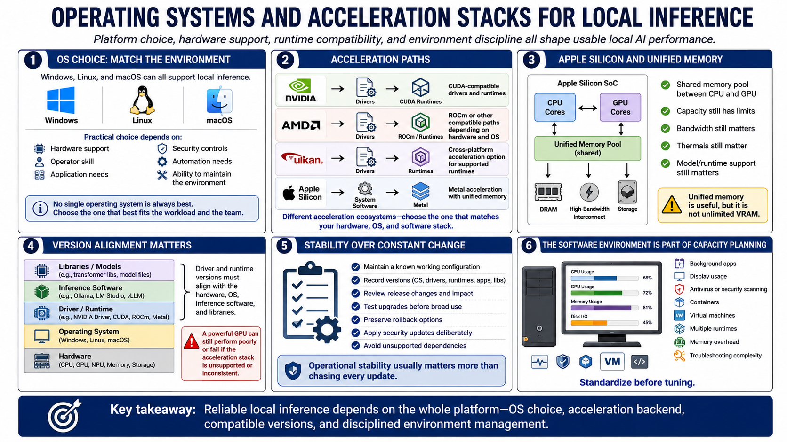

Operating Systems and Drivers
Connecting to LMS... Progress: in progress

Narration
Windows, Linux, and macOS can all support local inference. The practical choice depends on hardware support, operator skill, application needs, security controls, automation, and the ability to maintain the environment.
NVIDIA acceleration commonly relies on CUDA-compatible drivers and runtimes. AMD support may use ROCm or other compatible paths depending on hardware and operating system. Vulkan can provide a cross-platform acceleration option for supported runtimes.
Apple Silicon uses Metal and unified memory, allowing CPU and GPU components to share a memory pool. Available capacity, bandwidth, thermals, and model support still set limits. Unified memory should not be treated as unlimited VRAM.
Driver and runtime versions must align with the hardware, operating system, inference software, and libraries. A powerful GPU can perform poorly or fail to load a model when the acceleration stack is unsupported or inconsistent.
Stability matters more than chasing every update. Maintain a known working configuration, record versions, review release changes, test upgrades, and preserve rollback options. Security updates and unsupported dependencies still need timely attention.
The software environment is part of capacity planning. Background applications, display usage, antivirus or security scanning, containers, virtual machines, and multiple runtimes can consume memory and complicate troubleshooting. Standardize before tuning.